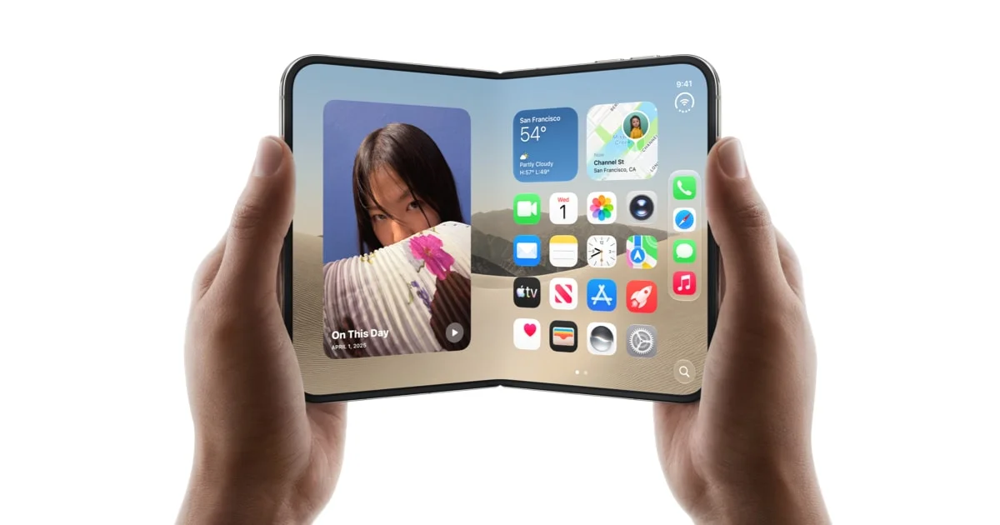
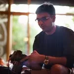

System and Experience Architect
MIT PhD Apple Inc.
I invented the
disappearing
camera.
An idea I originated. An architecture I drove from zero to one. A major product feature, now in millions of hands.

Now you see it.
Now you don’t.
The camera disappears.
The experience opens up.
The disappearing camera · Animation from Manohar’s original site.
The camera didn’t
need a new opening.
It needed a new premise.
For years, the display made room for the camera. I asked what would happen if they occupied the same space—and if computation could restore what the screen took from the light.
The contribution began with the concept and foundational architecture, before the handoff into product engineering.
Inside the invention
Priority 2018 · Granted 2022
One invention.
A wider way of thinking.
Cameras, sensing displays, robotics. The central achievement gives context to a larger body of work.
Understanding light.
Then making something of it.
Photography is part of the same practice: an attention to light, perception, and what an image makes a person feel.


The physics makes it possible.
The architecture makes it work.
The experience makes it matter.

An architect.
A photographic eye.
Electrical engineering, computer graphics, robotics and computational photography. Different disciplines brought to the same act of seeing.
A separate practice in the places we inhabit, the objects we choose, and the experience of being there.